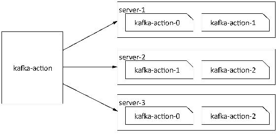

Kafka提供了一个kafka-topics.sh工具脚本用于对主题相关的操作，如创建主题、删除主题、修改主题分区数和副本分配以及修改主题级别的配置信息，查看主题信息等操作。该脚本核心代码仅一行：
exec $(dirname $0)/kafka-run-class.sh kafka.admin.TopicCommand "$@"运行kafka-run-class.sh脚本调用kafka.admin.TopicCommand类，同时接受一个操作类型指令，该指令主要包括--list、--describe、--create、--alter和--delete。
读者可以直接运行该脚本以查看该工具所支持的操作及操作命令格式。本节将详细介绍该工具操作命令的具体用法。
Kafka提供以下两种方式来创建一个主题。
（1）若代理设置了auto.create.topics.enable=true，该配置默认值为true，这样当生产者向一个还未创建的主题发送消息时，会自动创建一个拥有${num.partitions}个分区和${ default. replication.factor}个副本的主题。
（2）客户端通过执行kafka-topics.sh脚本创建一个主题。
本小节将采用第二种方式来创建主题，第一种方式创建主题将在讲解kafka-console- producer.sh时进行介绍。下面创建一个名称为“kafka-action”的主题，该主题拥有2个副本、3个分区，创建该主题命令如下：
kafka-topics.sh --create --zookeeper server-1:2181,server-2:2181,server-3:2181
--replication-factor 2 --partitions 3 --topic kafka-action在控制台执行结果输出如下：
Created topic "kafka-action".此时会在${log.dir}目录下创建相应的分区文件目录，副本分别分布在不同的节点上，该主题分区目录分布如图5-1所示。

图5-1 “kafka-action”在集群中的分布
同时登录ZooKeeper客户端查看所创建的主题元数据信息，“kafka-action”元数据信息如下：
[zk: server-1:2181(CONNECTED) 54] ls /brokers/topics/kafka-action/partitions
[0, 1, 2]
[zk: server-1:2181(CONNECTED) 55] get /brokers/topics/kafka-action
{"version":1,"partitions":{"2":[3,1],"1":[2,3],"0":[1,2]}}可以看到，该主题有3个分区、2个副本，分别分布在3个节点上。上述创建主题命令各参数说明如下。
error while executing topic command : replication factor: 4 larger than available
brokers: 3在创建主题时，我们还可以通过config参数来设置主题级别的配置以覆盖默认配置，可以设置多组配置，具体格式为：
--config config1-name=config1-value --config config2-name=config2-value创建一个名为config-test的主题，设置该主题的max.message.bytes为404800字节，执行命令如下：
kafka-topics.sh --create --zookeeper server-1:2181,server-2:2181 --replication-
factor 2 --partitions 3 --topic config-test --config max.message.bytes=404800输出结果如下：
Created topic "config-test".在创建主题时若使用了config参数，则通过ZooKeeper客户端可以在/config/topics节点下查看到该主题所覆盖的配置，相关节点信息如下：
[zk: 172.117.12.61:2181(CONNECTED) 67] get /config/topics/config-test
{"version":1,"config":{"max.message.bytes":"404800"}}关于主题级别的相关配置，读者可参阅Kafka官方网站的说明https://kafka.apache.org/ documentation.html#topic-config。
删除Kafka主题，一般有以下两种方式。
（1）手动删除各节点${log.dir}目录下该主题分区文件夹，同时登录ZooKeeper客户端删除待删除主题对应的节点，主题元数据保存在/brokers/topics和/config/topics目录下。
（2）执行kafka-topics.sh脚本进行删除，若希望通过该脚本彻底删除主题，则需要保证在启动Kafka时所加载的server.properties文件中配置delete.topic.enable=true，该配置默认为false。否则执行该脚本并未真正删除主题，而是在ZooKeeper的/admin/delete_topics目录下创建一个与待删除主题同名的节点，将该主题标记为删除状态。
本小节只讲解通过kafka-topics.sh删除主题的操作，如删除主题“kafka-action”的操作命令如下：
kafka-topics --delete --zookeeper server-1:2181,server-2:2181 --topic kafka-action删除命令执行后，在控制台打印结果信息如下：
Topic kafka-action is marked for deletion.
Note: This will have no impact if delete.topic.enable is not set to true.从以上执行结果可以分析出：当delete.topic.enable设置为false时，只是标记“kafka-action”为删除状态，主题在${log.dir}目录下对应的分区文件及在ZooKeeper中的相应节点并未被删除，而是在/admin/delete_topics目录下创建一个以待删除主题命名的节点，以作标记。此时若希望彻底删除主题，则需要通过手动删除相应文件及节点。当该配置为true时，则会将该主题对应的所有文件目录及元数据信息删除。
Kafka提供了list和describe两个命令方便查看主题信息，其中list参数列出Kafka所有的主题名，describe参数可以查看所有主题或某个特定主题的信息。
执行以下命令：
kafka-topics.sh --list --zookeeper server-1:2181,server-2:2181输出结果如下：
config-test
kafka-action当前Kafka集群有两个主题，主题名分别为“config-test”及“kafka-action”。
当执行describe命令时，若指定topic参数则查看特定主题的信息，若不指定topic参数则查看所有主题信息。该命令会按主题名分组显示各主题的信息。执行以下命令查看config-test主题的信息：
kafka-topics.sh --describe --zookeeper server-1:2181,server-2:2181执行结果输出如下：
Topic:config-test PartitionCount:3 ReplicationFactor:2 Configs:max.message.bytes=404800
Topic: config-test Partition: 0 Leader: 3 Replicas: 3,1 Isr: 3,1
Topic: config-test Partition: 1 Leader: 1 Replicas: 1,2 Isr: 1,2
Topic: config-test Partition: 2 Leader: 2 Replicas: 2,3 Isr: 2,3
Topic:kafka-action PartitionCount:3 ReplicationFactor:2 Configs:
Topic: kafka-action Partition: 0 Leader: 1 Replicas: 1,2 Isr: 1,2
Topic: kafka-action Partition: 1 Leader: 2 Replicas: 2,3 Isr: 2,3
Topic: kafka-action Partition: 2 Leader: 3 Replicas: 3,1 Isr: 3,1从输出结果可以看到：已按主题分组展示，每组主题信息中第一行分别展示了主题名、该主题分区总数、该主题副本总数、创建主题时通过config参数所设置的配置，从第二行开始按主题分区编号排序，展示每个分区的Leader副本节点、副本列表AR及ISR列表信息。
通过describe与under-replicated-partitions命令组合使用，可以查看处于“under replicated”状态的分区。处于该状态的主题可能正在进行同步操作，也有可能同步发生异常，即此时所查询到的主题分区的ISR列表长度小于AR列表长度。对于通过该命令查询到的分区要重点监控，因为这可能意味着集群某个代理已失效或者同步速度减慢等。当然，也可以指定topic参数以查询特定主题是否处于“under replicated”状态。执行命令如下：
kafka-topics.sh --describe --zookeeper 172.117.12.61:2181 --under-replicated-
partitions # 查看处于“under replicated”状态的主题通过describe与unavailable-partitions命令组合使用，可以查看没有Leader副本的主题。同样也可以指定topic参数，查看某个特定主题的哪些分区的Leader已不可用。执行命令如下：
kafka-topics.sh --describe --zookeeper server-1:2181,server-2:2181 --unavailable-
partitions通过describe与topics-with-overrides命令组合使用，可以查看主题覆盖了哪些配置。组合使用与只有describe命令的区别在于：topic-with-overrides命令只显示descibe命令执行的第一行信息。同样，也可以指定topic参数查看某个特定主题所覆盖的配置。执行以下命令：
kafka-topics.sh --describe --zookeeper server-1:2181,server-2:2181 --topics-with
-overrides # 查看主题所覆盖的配置输出信息如下：
Topic:config-test PartitionCount:3 ReplicationFactor:2 Configs:max.message.bytes=404800当创建一个主题之后，可以通过alter命令对主题进行修改，包括修改主题级别的配置、增加主题分区、修改副本分配方案、修改主题Offset等。下面详细讲解如何通过Kafka的shell脚本对主题进行修改。
在创建主题时，可以通过config参数覆盖主题级别的默认配置，当主题创建后可以通过alter与config参数组合使用，修改或增加新的配置以覆盖相应配置原来的值，或者通过alter与delete-config参数组合使用删除相应配置设置使其恢复默认值。同时Kafka还提供了一个kafka-configs.sh的脚本，专门用来对配置 （这里的配置不单指主题级别的配置）进行操作，在未来的版本中将不再支持alter与config参数组合使用的方式对配置进行操作。在当前版本（0.10.1.1）的Kafka通过alter参数对配置进行操作时会有操作命令已过期并推荐使用kafka- configs.sh脚本的提示信息，虽然这种操作方式已过期，但并未被移除，因此在这里依然对其操作方法进行介绍。下面通过修改主题“config-test”的相关配置来介绍相关命令的具体用法。
kafka-topics.sh --describe --zookeeper server-12181,server-2:2181,server-3:2181
--topics-with-overrides --topic config-test # 查看主题当前已覆盖的配置输出结果如下：
Topic:config-test PartitionCount:3 ReplicationFactor:2
Configs:max.message.bytes=404800 kafka-topics.sh --alter --zookeeper server-1:2181,server-2:2181,server-3:2181
--topic config-test --config max.message.bytes=204800输出信息如下：
WARNING: Altering topic configuration from this script has been deprecated and may
be removed in future releases. Going forward, please use kafka-configs.sh for this
functionality
Updated config for topic "config-test". kafka-topics.sh --alter --zookeeper server-1:2181,server-2:2181,server-3:2181
--topic config-test --config segment.bytes=209715200 Topic:config-test PartitionCount:3 ReplicationFactor:2
Configs:segment.bytes=209715200,max.message.bytes=204800 kafka-topics.sh --alter --zookeeper server-1:2181,server-2:2181,server-3:2181
--topic config-test --delete-config segment.bytes命令执行之后，再次查看主题config-test已覆盖的配置信息如下：
Topic:config-test PartitionCount:3 ReplicationFactor:2 Configs:max.message.bytes=204800Kafka并不支持减少分区的操作，我们只能为一个主题增加分区。例如，主题“config-test”目前有3个分区，如果将其分区设置为5个，操作命令如下：
kafka-topics.sh --alter --zookeeper server-1:2181,server-2:2181,server-3:2181
--topic config-test --partitions 5增加分区命令执行成功后，查看集群各节点${log.dir}目录下所分配的分区目录文件均已成功创建。同时登录ZooKeeper客户端查看分区元数据信息如下：
[zk: 172.117.12.61:2181(CONNECTED) 7] ls /brokers/topics/config-test/partitions
[0, 1, 2, 3, 4]
[zk: 172.117.12.61:2181(CONNECTED) 8] get /brokers/topics/config-test
{"version":1,"partitions":{"4":[1,3],"1":[1,2],"0":[3,1],"2":[2,3],"3":[3,2]}}通过以上元数据信息显示，主题config-test分区数已增加到5个，同时各分区副本进行了重新分配。